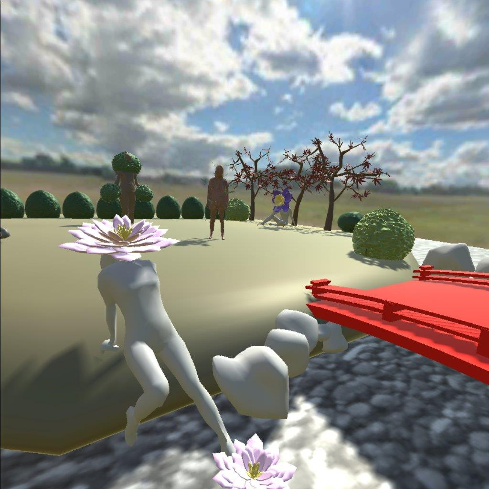

Gender and Body Positivity are two important aspects of feeling comfortable being yourself. I have struggled with body positivity in the past. I wanted to explore what it means to be accepting of who I am and what it truly means to be human. Pulling from nature, looking at plants, there are so many types and species of plants. They are all different and within that, there are variations on them, all flowers are not simply the typical red rose. Not all plants are flowers, just like plants, we as people, do not need to be all the same. In my piece, you walk around a garden of people. There are different bodies represented by different plants, even if a body is similar they are different are unique. All bodies are natural and your gender does not matter. We all are natural and natural is the status quo, nothing anything else.